Camina.
Respira. Descubre.
La propuesta de aventura suave añade una caminata guiada por el pinar y al río. El recorrido y sus condiciones se confirmarán antes de tu visita.
Me interesa la caminata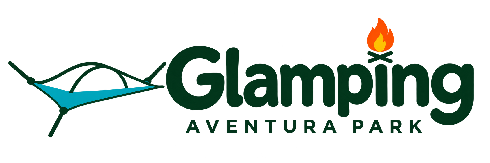
VALLE DE ÁNGELES · HONDURAS
Entre los pinos de Hacienda El Paraíso estamos preparando una nueva forma de quedarte en la montaña.
Planea tu escapadaApertura oficial · 12 de diciembre de 2026.
Carpas elevadas y naturaleza, en preparación.
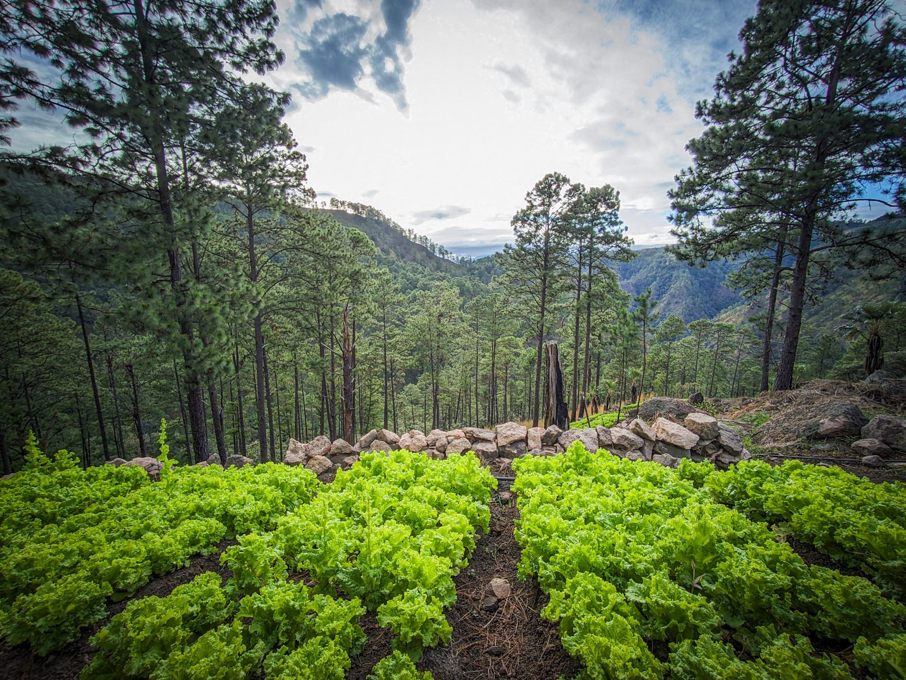
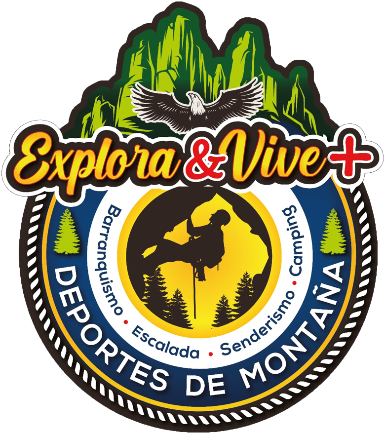
LA EXPERIENCIA QUE VIENE
Una carpa elevada, la montaña alrededor y tiempo para estar juntos. Esa es la experiencia que estamos preparando.
La propuesta reúne estancia, fogata y comida de Hacienda. Podrás consultar por una caminata o ampliar la aventura con El Torno.
Explora las propuestasEstamos en preparación. Las fotografías muestran la Hacienda real; todavía no muestran carpas instaladas.
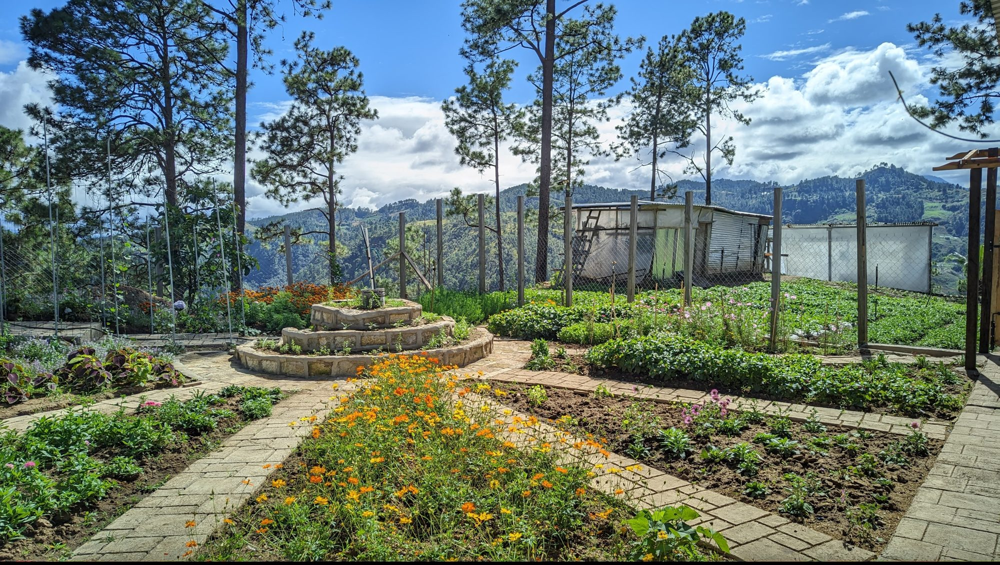
EL LUGAR QUE NOS RECIBE
Antes de la escapada, está la tierra. Los cultivos, el trabajo de cada día y el bosque que rodea esta Hacienda en Valle de Ángeles.
Aquí comienza Glamping Aventura Park: un proyecto para compartir el lugar desde una nueva perspectiva.
Conoce el sitio de la HaciendaEXPLORA Y VIVE MÁS
Una estancia tranquila o una experiencia que te invite a ir un poco más allá. Estamos preparando las opciones junto a Explora y Vive Más.
EL TORNO VISTO POR OTROS
Videos, relatos y rutas de otros visitantes. Contenido independiente del proyecto.
Estas publicaciones hablan del destino y de experiencias de sus autores. No son reseñas de Glamping Aventura Park ni implican una alianza o recomendación de nuestro proyecto.
Descubrí Honduras
Cañón El Torno cerca de Hacienda el Paraíso - Valle de AngelesMax Delcid
Rappel Valle de Ángeles / El TornoArmémola Hn
Armémola, Episodio 1 — El Tornosteven klas
Cañón el torno, Valle de ángeles Honduras.pijiniando con miguelito
El Torno, Valle de ÁngelesEnrique Trejo Funez
El Torno, Valle de Ángeles, HondurasHonduras Tips
Cañón El Torno, una maravilla natural para conocer en Valle de ÁngelesHonduras.com
Cañon del Torno, el sorprendente destino de Valle de ÁngelesHonduras Radio TV Turística
Cañón El TornoEl País Honduras
Honduras extrema te lleva a hacer rappel a El TornoKevin Padgett_24
El Torno (Valle de Ángeles) y Poza del RobleMax Delcid
Rappel - El Torno - Valle de Ángelesfmorazan
El Torno Valle de AngelesKaterin Vasmu
El torno,valle de AngelesLos enlaces abren las publicaciones originales en otra pestaña. Las rutas reflejan recorridos y fechas de sus autores; consulta las condiciones actuales antes de planear una actividad.
ESCOGE TU ESCAPADA
Propuestas de estancia con cena y desayuno del menú catracho. Tarifas propuestas: se confirman antes de reservar.
DUERME ENTRE LOS PINOS
| Pareja | L 3,400 |
| Familia de 3 | L 4,800 |
| Persona sola | L 2,400 |
Por noche. Tarifa propuesta, sujeta a confirmación.
RESPIRA EL BOSQUE. DISFRUTA EL CAMINO.
| Pareja | L 4,000 |
| Familia de 3 | L 5,600 |
| Persona sola | L 2,800 |
Por noche. Tarifa propuesta, sujeta a confirmación.
DESCANSA ENTRE PINOS. VIVE EL TORNO.
| Pareja | L 5,000 |
| Familia de 3 | L 6,900 |
| Persona sola | L 3,300 |
Por noche. Tarifa propuesta, sujeta a confirmación.
Sin noche de alojamiento. Incluyen almuerzo catracho en horno de leña, Merienda del Paraíso, parqueo y baños.
Para sumar a su visita. Cada una termina con la Merienda del Paraíso.
Importes en lempiras (HNL), propuestos para revisión; no son tarifa final. Falta confirmar impuestos, vigencia, capacidad por carpa y condiciones de acceso al rápel. Una consulta no aparta una unidad ni confirma una reserva.
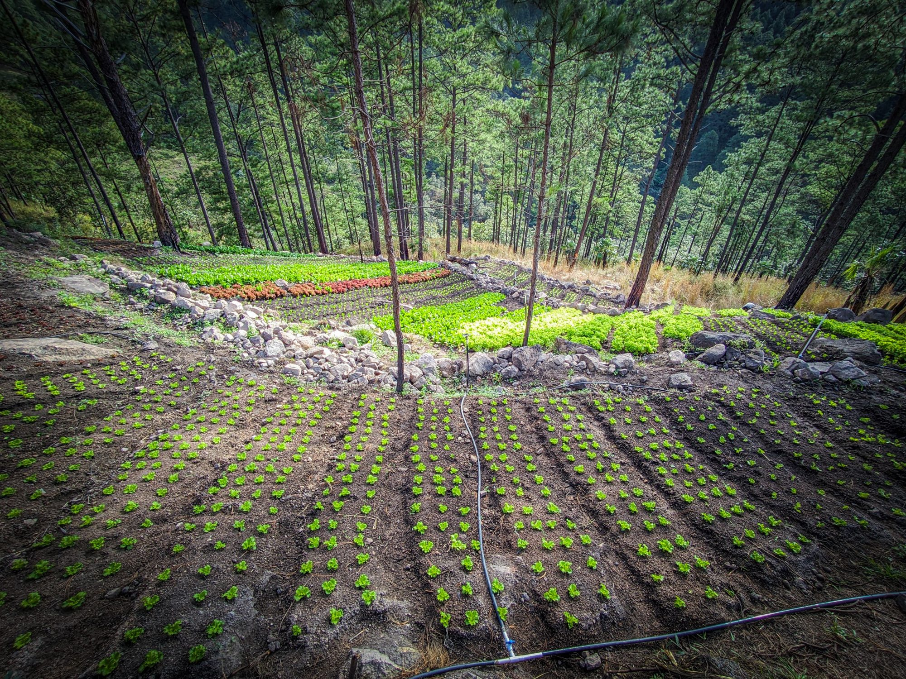
UNA HISTORIA QUE ESTAMOS PREPARANDO
La naturaleza
pone el escenario.
Tú pondrás los recuerdos.
EMPIEZA CON UNA IDEA
Cuéntanos qué te gustaría vivir. Primero revisaremos fechas, personas y experiencia; después se confirmarán disponibilidad, precio total y condiciones.
Elige y cuéntanos.Prepara los detalles de tu consulta.
Recibe una propuesta.El equipo comprueba alojamiento y actividades.
Confirma con el equipo.La reserva se confirma al cumplir las condiciones acordadas.
En este formulario puedes preparar y copiar tu mensaje. No se envían datos, se cobran importes ni se confirma una reserva.
TU MENSAJE ESTÁ PREPARADO
Revisa el texto antes de compartirlo con el equipo. Esta es una consulta, no una reserva confirmada.
Consulta de grupo: la asignación de carpas deberá revisarse con el equipo.
Continuar por WhatsAppNo se ha enviado ningún mensaje ni bloqueado una carpa. El contacto comercial se incorporará al confirmar la operación.
GALERÍA AUTÉNTICA
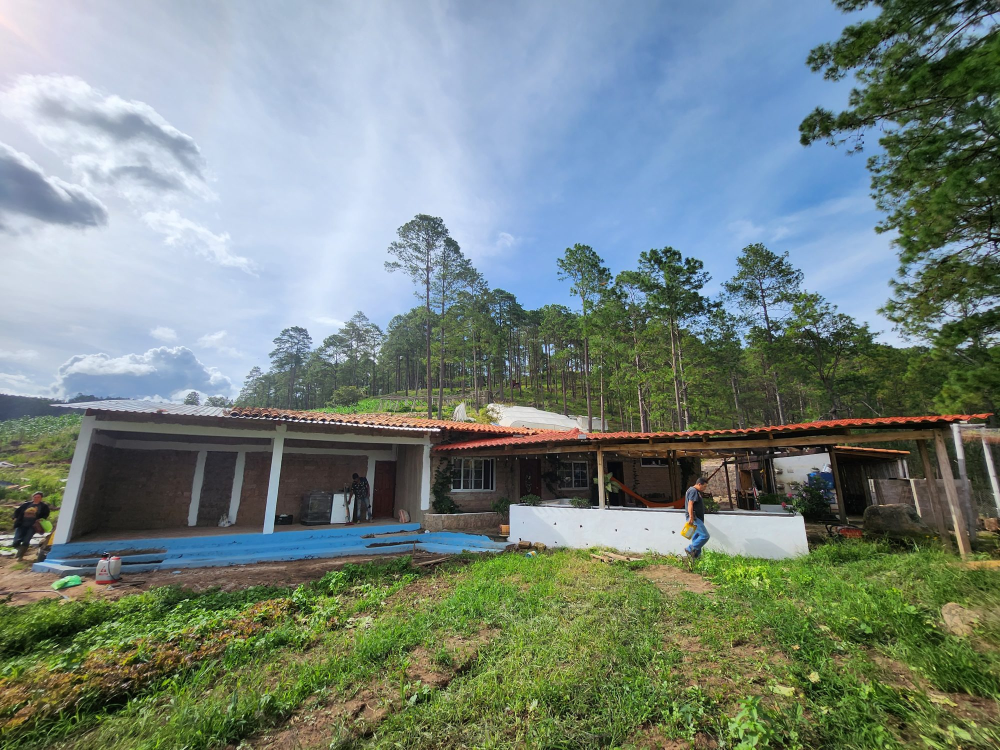
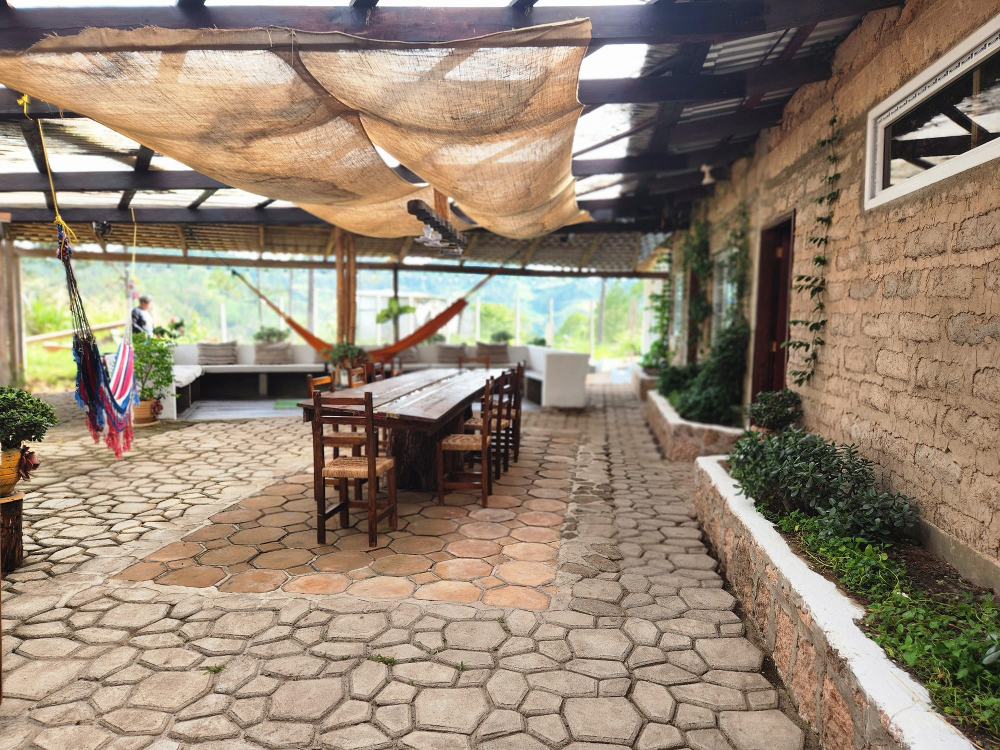
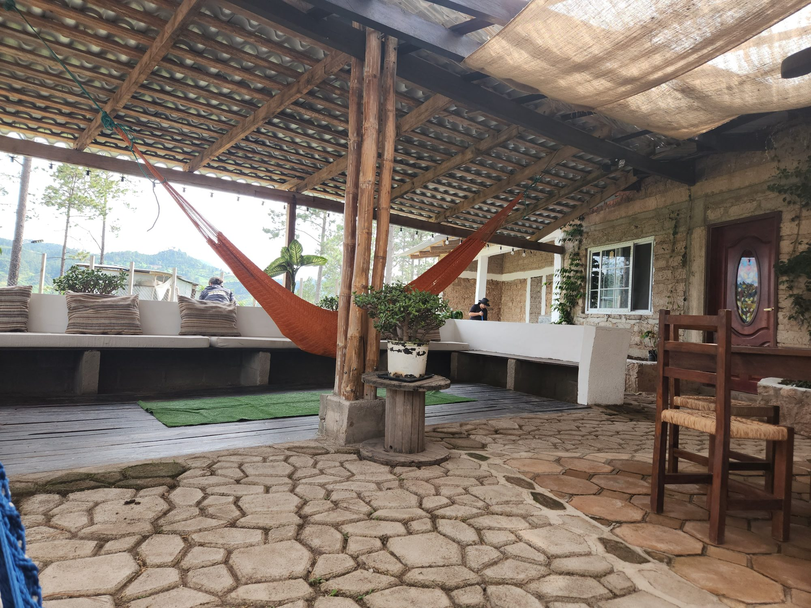
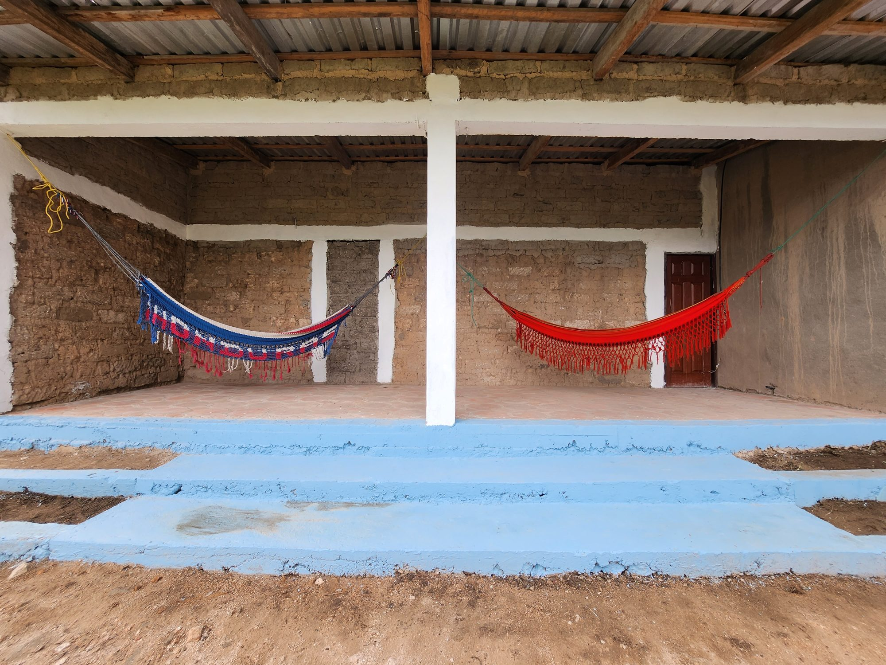
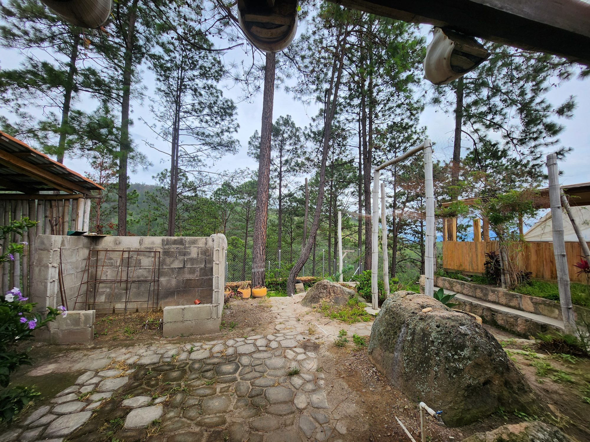
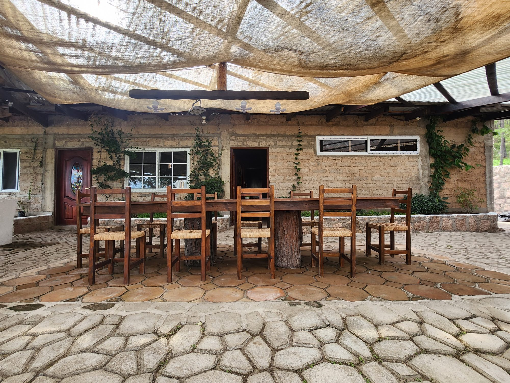
Fotografías reales de Hacienda El Paraíso. Aún no muestran las carpas: las publicaremos cuando estén instaladas.
ANTES DE IMAGINAR TU VISITA
La apertura oficial de Glamping Aventura Park es el 12 de diciembre de 2026. Ahora estamos preparando la experiencia en Hacienda El Paraíso.
Puedes consultar por una estancia desde el 12 de diciembre de 2026. La solicitud no confirma una reserva: el equipo debe revisar disponibilidad, servicios, tarifas y condiciones antes de confirmarla.
Son imágenes reales de Hacienda El Paraíso. Todavía no muestran las carpas instaladas. Compartiremos imágenes de la experiencia terminada cuando existan.
En Hacienda El Paraíso, Valle de Ángeles, Honduras. Las indicaciones exactas de llegada, el acceso y la atención se coordinarán antes de tu visita.
La propuesta permite elegir una estancia o ampliar la experiencia con caminata y aventura. Cada actividad tendrá sus requisitos y condiciones confirmados antes de ofrecerla.
Las tarifas, su unidad de cobro y las inclusiones finales están por confirmar. El equipo deberá entregar una cotización completa antes de confirmar cualquier reserva.